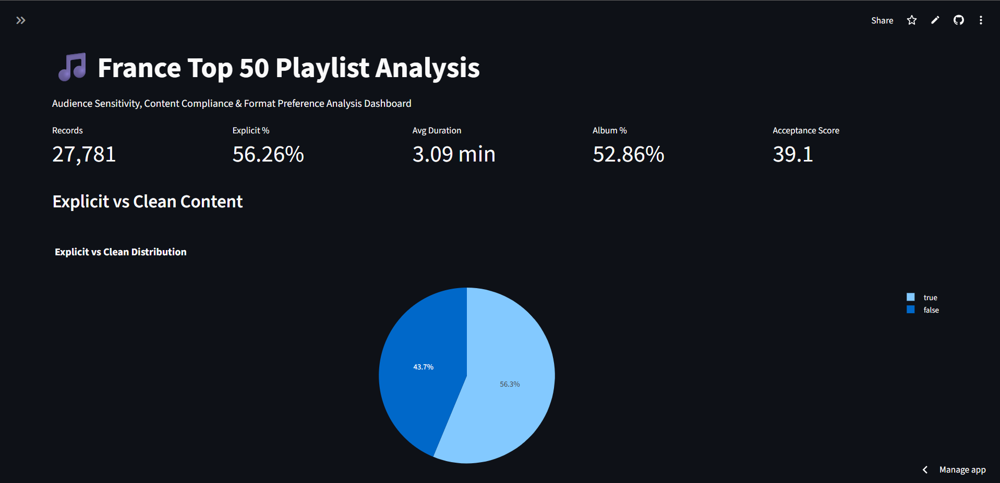
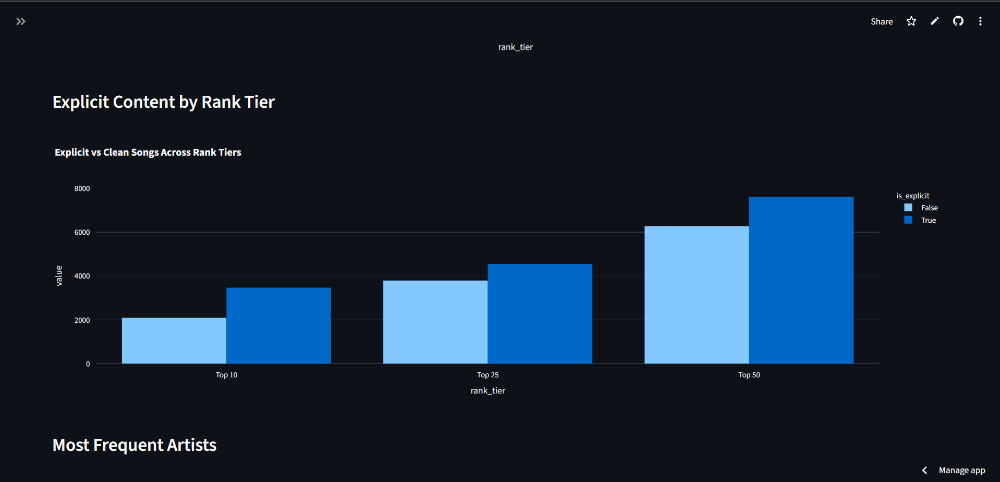
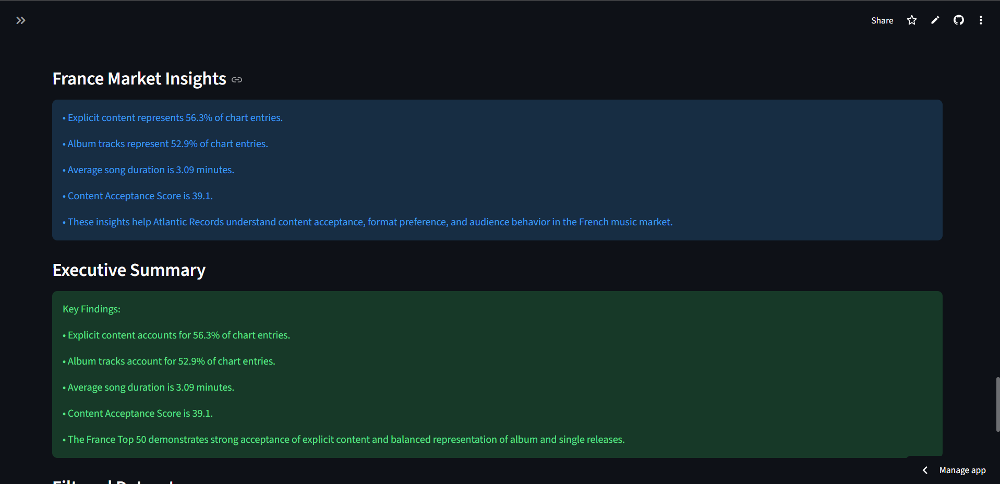

Aspiring AI/ML Engineer | Data Science & Generative AI Enthusiast
Python | Machine Learning | Data Analysis | Streamlit | SQL | Generative AI
I am a Computer Science graduate from VIT Bhopal and an aspiring AI/ML Engineer. I enjoy building machine learning projects, data-driven applications, dashboards, and AI tools that solve real-world problems.
Currently, I am working as a Bluestock Fintech Intern while building my AI/ML portfolio with projects in data analytics, machine learning, fintech analytics, NLP, and Generative AI.

Interactive Streamlit dashboard analyzing Spotify France Top 50 playlist trends using Python, Pandas, Plotly, and Streamlit. The project explores explicit content, album preferences, duration trends, artist performance, ranking patterns, and audience behavior.


Ongoing fintech analytics project focused on mutual fund data, NAV history, SIP inflows, AUM trends, scheme performance, investor transactions, and financial insights using Python, SQL, and data visualization.
Collection of LeetCode solutions demonstrating problem-solving, algorithms, data structures, and SQL skills for coding interviews.
Planned machine learning project to predict student performance using preprocessing, feature engineering, regression/classification models, and model evaluation.
Planned NLP-based AI application to analyze resumes, extract skills, compare them with job descriptions, and suggest improvements.
Completed IBM Career Education Program certification in Blockchain Developer.
Completed IBM Career Education Program certification in Blockchain Fundamentals.
Completed Adobe UI & UX Graphic Design Certification Program.
Working on finance and data-related tasks involving Python, data analysis, stock market concepts, mutual funds, and fintech fundamentals.
Email: anushkadas1970@gmail.com
GitHub: github.com/AN-ai-del
LinkedIn: View Profile
Resume: View Resume